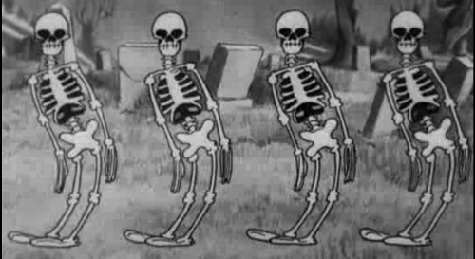

После ритуала к вам пришел Некромант и спросил у вашего духа : Что есть музыка жизни?
Вы ответили : Spooky Scary Skeletons! И были воскрешены вместе с другими трупами
С тех пор вы устраиваете каждую ночь танцы и пляски со своими скелебро
2016 Patamen©
Оводов Даниил
Дмитрий Ташлыков - За создание вселенной
Patamen - За названия материка, городов и трактиров
Злой бог - за большую часть картинок и музыку, предоставленную в квесте
и вам за то что прошли квест